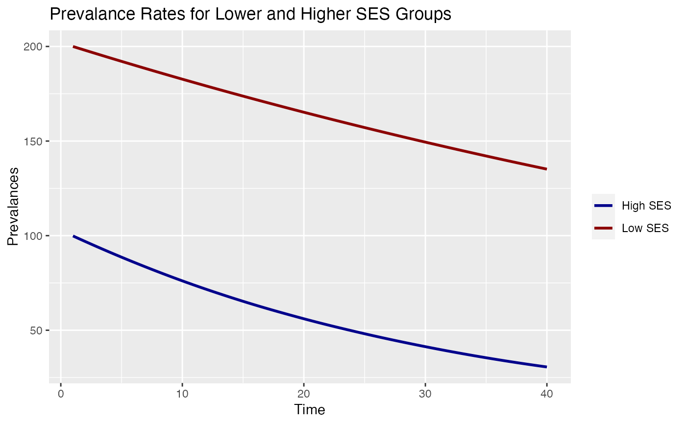
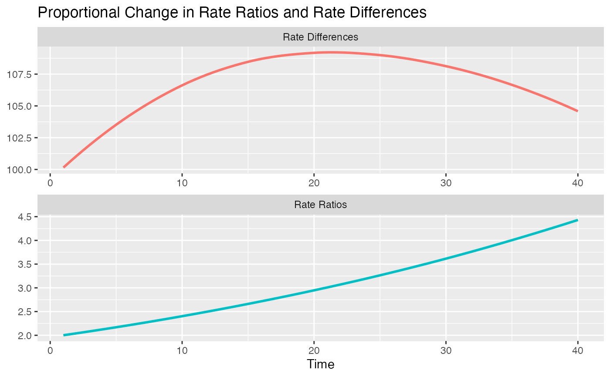

This method computes the proportional change of absolute (rate differences) and relative (rate ratios) inequalities of prevalence rates for two different status groups, as proposed by Mackenbach et al. (2015).
inequ_trend(data, prev.low, prev.hi)A data frame that contains the variables with prevalence rates for both low and high status groups (see 'Examples').
The name of the variable with the prevalence rates for the low status groups.
The name of the variable with the prevalence rates for the hi status groups.
A data frame with the prevalence rates as well as the values for the
proportional change in absolute (rd) and relative (rr)
ineqqualities.
Given the time trend of prevalence rates of an outcome for two status groups (e.g. the mortality rates for people with lower and higher socioeconomic status over 40 years), this function computes the proportional change of absolute and relative inequalities, expressed in changes in rate differences and rate ratios. The function implements the algorithm proposed by Mackenbach et al. 2015.
Mackenbach JP, Martikainen P, Menvielle G, de Gelder R. 2015. The Arithmetic of Reducing Relative and Absolute Inequalities in Health: A Theoretical Analysis Illustrated with European Mortality Data. Journal of Epidemiology and Community Health 70(7): 730-36. doi:10.1136/jech-2015-207018
# This example reproduces Fig. 1 of Mackenbach et al. 2015, p.5
# 40 simulated time points, with an initial rate ratio of 2 and
# a rate difference of 100 (i.e. low status group starts with a
# prevalence rate of 200, the high status group with 100)
# annual decline of prevalence is 1% for the low, and 3% for the
# high status group
n <- 40
time <- seq(1, n, by = 1)
lo <- rep(200, times = n)
for (i in 2:n) lo[i] <- lo[i - 1] * .99
hi <- rep(100, times = n)
for (i in 2:n) hi[i] <- hi[i - 1] * .97
prev.data <- data.frame(lo, hi)
# print values
inequ_trend(prev.data, "lo", "hi")
#> $data
#> lo hi rr rd
#> 1 200.0000 100.00000 2.000000 100.0000
#> 2 198.0000 97.00000 2.041237 101.0000
#> 3 196.0200 94.09000 2.083324 101.9300
#> 4 194.0598 91.26730 2.126280 102.7925
#> 5 192.1192 88.52928 2.170120 103.5899
#> 6 190.1980 85.87340 2.214865 104.3246
#> 7 188.2960 83.29720 2.260533 104.9988
#> 8 186.4131 80.79828 2.307141 105.6148
#> 9 184.5489 78.37434 2.354711 106.1746
#> 10 182.7034 76.02311 2.403262 106.6803
#> 11 180.8764 73.74241 2.452814 107.1340
#> 12 179.0677 71.53014 2.503387 107.5375
#> 13 177.2770 69.38424 2.555004 107.8927
#> 14 175.5042 67.30271 2.607684 108.2015
#> 15 173.7492 65.28363 2.661451 108.4655
#> 16 172.0117 63.32512 2.716326 108.6866
#> 17 170.2916 61.42537 2.772333 108.8662
#> 18 168.5886 59.58260 2.829494 109.0060
#> 19 166.9028 57.79513 2.887834 109.1076
#> 20 165.2337 56.06127 2.947377 109.1725
#> 21 163.5814 54.37943 3.008148 109.2020
#> 22 161.9456 52.74805 3.070172 109.1975
#> 23 160.3261 51.16561 3.133474 109.1605
#> 24 158.7229 49.63064 3.198082 109.0922
#> 25 157.1356 48.14172 3.264022 108.9939
#> 26 155.5643 46.69747 3.331321 108.8668
#> 27 154.0086 45.29655 3.400008 108.7121
#> 28 152.4685 43.93765 3.470111 108.5309
#> 29 150.9439 42.61952 3.541660 108.3243
#> 30 149.4344 41.34093 3.614684 108.0935
#> 31 147.9401 40.10071 3.689214 107.8394
#> 32 146.4607 38.89769 3.765280 107.5630
#> 33 144.9961 37.73076 3.842915 107.2653
#> 34 143.5461 36.59883 3.922150 106.9473
#> 35 142.1106 35.50087 4.003019 106.6098
#> 36 140.6895 34.43584 4.085555 106.2537
#> 37 139.2826 33.40277 4.169794 105.8799
#> 38 137.8898 32.40068 4.255769 105.4891
#> 39 136.5109 31.42866 4.343517 105.0823
#> 40 135.1458 30.48580 4.433074 104.6600
#>
#> attr(,"class")
#> [1] "sj_inequ_trend"
# plot trends - here we see that the relative inequalities
# are increasing over time, while the absolute inequalities
# are first increasing as well, but later are decreasing
# (while rel. inequ. are still increasing)
plot(inequ_trend(prev.data, "lo", "hi"))

